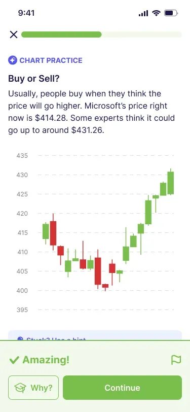

28-Day Investing Challenge
Explore the other Classic track.
Learn more →Learn how traders think, how markets move and how to weigh buy, sell or hold decisions before putting real money at risk.
Short daily lessons, quizzes, scenarios and simulator practice help you learn by making decisions.
Start the Trading Challenge
Learn how traders think, how markets move and how to weigh buy, sell or hold decisions before putting real money at risk. Build habits for planning entries and exits, managing risk and recognizing fear, impatience and overconfidence.
Use virtual funds and market data to practice buy, sell and hold decisions. See how positions change as prices move.
Choose this path to understand active decisions, short- and medium-term market movements, and the psychology of entries, exits and risk.
Every Finelo challenge is built around the same learning loop:
One short lesson a day and structured simulator practice.
Start the Trading ChallengeExplore the other Classic track.
Learn more →Explore the equivalent challenge with AI-assisted research and analysis.
Learn more →See how lessons, simulator practice and progress tracking fit together.
Learn more →Finelo is an educational product. In Demo mode you practice with virtual funds, without placing real trades.
A four-week learning path with daily lessons, quizzes and practical exercises.
The course teaches decision-making without giving trade instructions.
Simulator practice uses virtual funds.
Finelo is an educational product.
Choose this path to understand active decisions, short- and medium-term market movements, and the psychology of entries, exits and risk.
Learn how markets work, explore decisions, and build your routine one lesson at a time.
Start the Trading ChallengeFinelo is an educational product. The simulator uses virtual funds and market data.